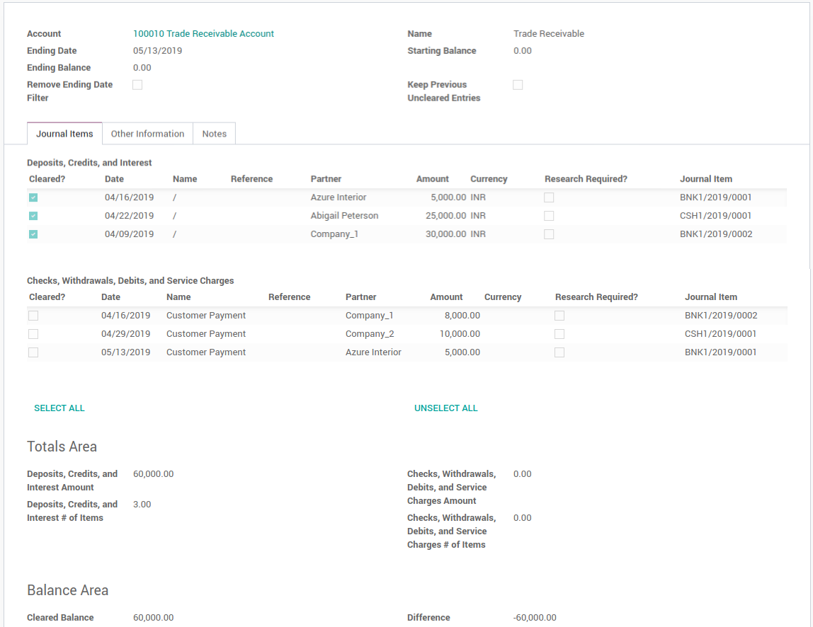

<section class="oe_container">
 <div class="oe_row oe_spaced" style="padding-left:30px">
        <div class="oe_span12">
            <h2 class="oe_slogan"><font color='#3b5998'>Bank Account Reconciliation</font></h2>
        </div>
        <div class="oe_span12">
            <p class='oe_mt32'>
            * Based on configuration Users will be able to validate and indicate if a transaction has "Cleared the Bank" 
            using a checkmark on a new Reconcile Financial Account Statement view on each individual financial transaction.
            Users will also be able to mark transactions on a bank account for future research.
            </p>
            <h3>Salary Rules</h3>
            <div class="col-md-12" style="padding-left:0px;">
                <center></center>
            </div>
        </div>
    </div>
</section>
